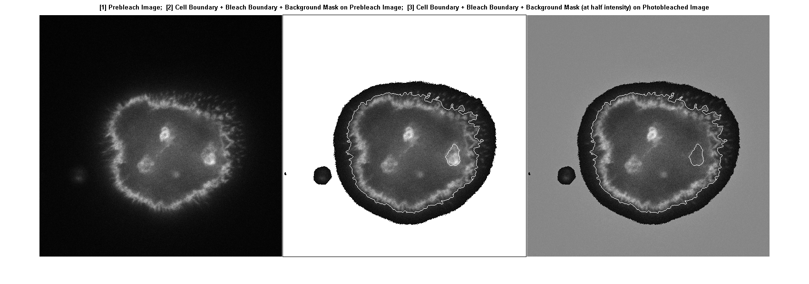
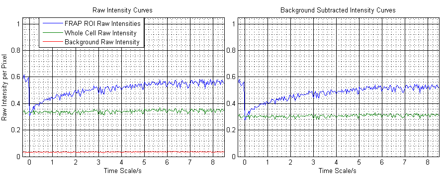
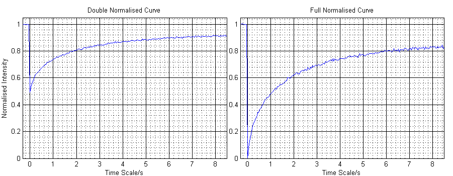
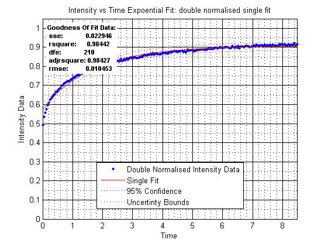
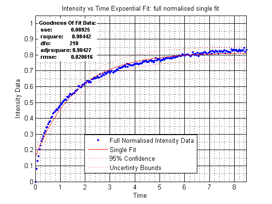
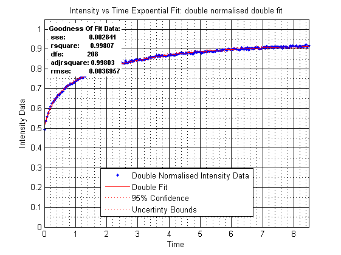
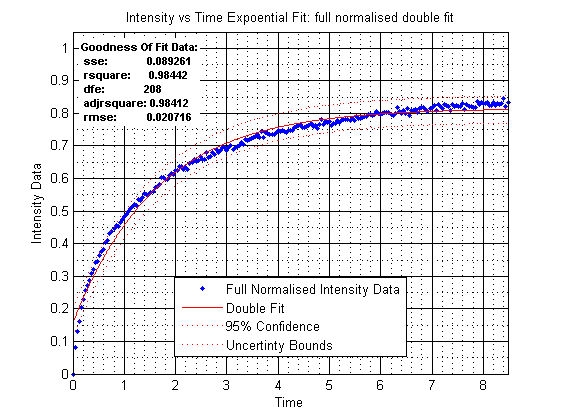
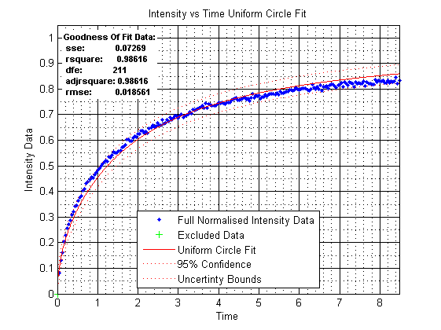

Contents
- Clean up by clearing variables and command window and closing windows
- Import Data
- Correct Footage
- Get Mask and Boundary for the whole cell
- Get Bleach Mask And Boundary
- Get Background Mask
- Getting intensity functions
- Plotting Data
- Fitting Expoential Data
- Mobile Fraction
- half lives
- Fitting Uniform Circle Kinetics
- Diffusion Constant:
% Demo 2 % Script which should effectively run the included functions
Clean up by clearing variables and command window and closing windows
close all clear all clc
Import Data
first thing to do is to import the data from the .mvd2 file from Mark Marsh Data. The following invokes a modified bfopen.m included in the zip folder
disp('getting footage from file') [f, dF] = getFootage('N:\FRAP\Data\FRAP_data_MarkMarsh\220611.mvd2', 11); % this will automatically open the first series of data and return a % f1 = footage frames in structure under 'image' field and dF1 = all % supplimentary data on f1, see help Doc on getFootage for more help % n = input('what series would you like? : \n'); % input number for the desired series, try 9 maybe? %[fn, dFn] = getFootage('N:\FRAP\Data\FRAP_data_MarkMarsh\220611.mvd2', n); %retrives data series n
getting footage from file
VolocityReader initializing N:\FRAP\Data\FRAP_data_MarkMarsh\220611.mvd2
VolocityReader initializing N:\FRAP\Data\FRAP_data_MarkMarsh\220611.mvd2
Reading series #11
........................................................................
........................................................................
........................................................................
........................................................................
........................................................................
........................................................................
..........
N:\FRAP\Data\FRAP_data_MarkMarsh\220611.mvd2
There are a total of 71 series in this data file
The total number of frames in this image sequence is: 442
Correct Footage
the supplied .mvd2 data has a major flaw, every even numbered frame in all the series I have viewed is useless.Not all the series included (71 in total) are actually cell footage, some are graphs etc.
% % playVid(f,[1,100]); % show flawed data from frame 1 to 100 % playVid(fn,1,100); % use this if you wish to see the other series you chose disp('correcting footage due to dud frames') fc = correctedFootage(f,[],[],'odd'); % Cuts to the first 100 frames and then keeps only the odd numbered frames. % [] is an option for cropping footage, see help doc on correctedFootage. % cfn = correctedFootage(fn, [1,100],[],'odd'); % use for series n % playVid(fc,[1,25]);
correcting footage due to dud frames
Get Mask and Boundary for the whole cell
aver = 1; % aver = input('number of initial frames to use for average? : \n'); disp('getting cell mask and boundary') [cellMask, cellBoundary] = cellMaskAndBoundary(fc,aver,'no','clean','skel'); % the input aver is used to form an image of the cell over the first aver % frames giving a more uniform/consistent image. The input 'clean' takes % away all except the largest connected object in the image and 'skel' % thins the boundary to single pixel. Colour can also be added and the user % input for threshold supressed see help doc for more. % [cellMaskn, cellBoundaryn] = cellMaskAndBoundary(fn,aver,'clean', 'skel');
getting cell mask and boundary
Get Bleach Mask And Boundary
avb = []; % avb = input('Guess for photobleaching frame : \n'); disp('getting bleach mask and boundary') [bleachMask, bleachBoundary, instant] = bleachMaskAndBoundary(fc, cellMask, avb, 'no','clean','skel'); % operates similarly to cellMaskAndBoundary except requires cellMask as an % input and can take a numeric input for the sure post bleach number (else % defults to 25, as here). % [bleachMaskn, bleachBoundaryn] = bleachMaskAndBoundary(fn,aver,'clean','skel');
getting bleach mask and boundary First post bleach frame: 9
Get Background Mask
disp('getting background mask') bgMask = backgroundMask(fc); % returns a logical map or areas in the background, i.e. not cell (or too near cell) % or anyother bright spots.
getting background mask
Getting intensity functions
raw
[I_b, I_c, I_bg] = intensityFRAP(fc,bleachMask, instant, cellMask, bgMask); % double norm [~,dI] = evalc('intensityFRAP(fc,bleachMask, instant, cellMask,bgMask, ''double'');'); % full norm [~,fI] = evalc('intensityFRAP(fc,bleachMask, instant, cellMask,bgMask, ''full'');');
Plotting Data
close all t = ((1:(size(fc,3))) - instant)*1/25; % This is the time vector, 1/25 is the footage frame rate [frames/s] % Plot ROIs f1 = fc(:,:,1); b = bwmorph(ones(size(f1,1),size(f1,2)),'remove'); figure, montage([b + f1,(b~=1).*(f1 + cellBoundary+ bleachBoundary + bgMask), b + fc(:,:,instant) + cellBoundary + bleachBoundary + bgMask/2]) title('[1] Prebleach Image; [2] Cell Boundary + Bleach Boundary + Background Mask on Prebleach Image; [3] Cell Boundary + Bleach Boundary + Background Mask (at half intensity) on Photobleached Image','FontWeight','bold') set(gcf, 'Position', [100,450,1700,600]) % Raw figure, subplot('Position', [0.05,0.1,.45,.8]) plot(t,I_b, t,I_c, t,I_bg); title('Raw Intensity Curves') xlabel('Time Scale/s') ylabel('Raw Intensity per Pixel') axis([min(t),max(t),0,1.05])% Grid Axis grid on set(gca, 'GridLineStyle', '-'); grid(gca,'minor') legend(gca, 'FRAP ROI Raw Intensities','Whole Cell Raw Intensity','Background Raw Intensity', 'Location', 'best' ); subplot('Position', [0.53,0.1,.45,.8]) plot(t,I_b - I_bg, t,I_c - I_bg, t,I_bg - I_bg); title('Background Subtracted Intensity Curves') xlabel('Time Scale/s') axis([min(t),max(t),0,1.05])% Grid Axis grid on set(gca, 'GridLineStyle', '-'); grid(gca,'minor') set(gcf, 'Position', [50,100,900,350]) % Plotting dI and fI figure, subplot('Position', [0.05,0.1,.45,.8]) plot(t,dI) title('Double Normalised Curve') xlabel('Time Scale/s') ylabel('Normalised Intensity') axis([min(t),max(t),0,1.05])% Grid Axis grid on set(gca, 'GridLineStyle', '-'); grid(gca,'minor') subplot('Position', [0.53,0.1,.45,.8]) plot(t,fI) title('Full Normalised Curve') xlabel('Time Scale/s') grid on axis([min(t),max(t),0,1.05])% Grid Axis grid on set(gca, 'GridLineStyle', '-'); grid(gca,'minor') set(gcf, 'Position', [970,100,900,350])  
Fitting Expoential Data
single fit
[dnorm_sfit,dnorm_sfit_gof,dnorm_sfit_mobhalf, dnorm_sfit_uncer] = fitExp(dI,t); [fnorm_sfit,fnorm_sfit_gof,fnorm_sfit_mobhalf, fnorm_sfit_uncer] = fitExp(fI,t); % double fit [dnorm_dfit,dnorm_dfit_gof,dnorm_dfit_mobhalf, dnorm_dfit_uncer] = fitExp(dI,t,'double'); [fnorm_dfit,fnorm_dfit_gof,fnorm_dfit_mobhalf, fnorm_dfit_uncer] = fitExp(fI,t,'double');   
Mobile Fraction
single expoential fit
fprintf('Single fit double normalised mobile fraction: (%-.*f +/- %-.1g) \n',(length(sprintf('%.1g', dnorm_sfit_uncer.mobile))-2), dnorm_sfit_mobhalf.mobile, dnorm_sfit_uncer.mobile) fprintf('Single fit full normalised mobile fraction: (%-.*f +/- %-.1g) \n',(length(sprintf('%.1g', fnorm_sfit_uncer.mobile))-2), fnorm_sfit_mobhalf.mobile, fnorm_sfit_uncer.mobile) % double expoential fit fprintf('Double fit double normalised mobile fraction: (%-.*f +/- %-.1g) \n',(length(sprintf('%.1g', dnorm_dfit_uncer.mobile))-2), dnorm_dfit_mobhalf.mobile, dnorm_dfit_uncer.mobile) fprintf('Double fit full normalised mobile fraction: (%-.*f +/- %-.1g) \n',(length(sprintf('%.1g', fnorm_dfit_uncer.mobile))-2), fnorm_dfit_mobhalf.mobile, fnorm_dfit_uncer.mobile)
Single fit double normalised mobile fraction: (0.781 +/- 0.006) Single fit full normalised mobile fraction: (0.815 +/- 0.005) Double fit double normalised mobile fraction: (0.838 +/- 0.002) Double fit full normalised mobile fraction: (0.816 +/- 0.006)
half lives
single expoential fit
fprintf('Single fit double normalised halflife: (%-.*f +/- %-.1g)s \n',(length(sprintf('%.1g', dnorm_sfit_uncer.halflife))-2), dnorm_sfit_mobhalf.halflife, dnorm_sfit_uncer.halflife) fprintf('Single fit full normalised halflife: (%-.*f +/- %-.1g)s \n',(length(sprintf('%.1g', fnorm_sfit_uncer.halflife))-2), fnorm_sfit_mobhalf.halflife, fnorm_sfit_uncer.halflife) % double expoential fit fprintf('Double fit double normalised halflife: (%-.*f +/- %-.1g)s \n',(length(sprintf('%.1g', dnorm_dfit_uncer.halflife))-2), dnorm_dfit_mobhalf.halflife, dnorm_dfit_uncer.halflife) fprintf('Double fit full normalised halflife: (%-.*f +/- %-.1g)s \n',(length(sprintf('%.1g', fnorm_dfit_uncer.halflife))-2), fnorm_dfit_mobhalf.halflife, fnorm_dfit_uncer.halflife)
Single fit double normalised halflife: (1.14 +/- 0.05)s Single fit full normalised halflife: (1.14 +/- 0.05)s Double fit double normalised halflife: (0.8 +/- 0.1)s Double fit full normalised halflife: (0.8 +/- 0.3)s
Fitting Uniform Circle Kinetics
Only works on full normalised data, if double normalised data is entered it is changed to full automatically
[fit_UniCirc,fit_UniCirc_gof,fit_UniCirc_uncer] = fitUniCirc(fI,t); fprintf('Uniform Circle fit charistic diffusion time: (%-.*f +/- %-.1g)s \n',(length(sprintf('%.1g',fit_UniCirc_uncer.td))-2),fit_UniCirc.td, fit_UniCirc_uncer.td)
Uniform Circle fit charistic diffusion time: (1.39 +/- 0.02)s
Diffusion Constant:
assume uniform circular beam intensity profile:
w2 = sum(sum(bleachMask))/pi; %Circle radius squared w = sqrt(w2); %Circle radius squared dw = sqrt(sum(sum(imclose(bleachMask,strel('disk',ceil(w/2)))))/pi); ew = sqrt(sum(sum(imopen(bleachMask,strel('disk',ceil(w/2)))))/pi); uncer_w2 = ((dw - ew)/2)*2*(w); % uncertinity in circle radius squared fprintf('Radius of circle: (%-g +/- %-g)pixels \n',w, ((dw - ew)/2)) % single expoential fit dnorm_sfit_D = 0.224*(w2)/(dnorm_sfit_mobhalf.halflife); dnorm_sfit_uncer.D = 0.224*(dnorm_sfit_mobhalf.halflife)^(-1) * sqrt(uncer_w2^2 + (w2*dnorm_sfit_uncer.halflife/dnorm_sfit_mobhalf.halflife)^2); fprintf('Single fit double normalised diffusion constant: (%-g +/- %-g)pixel^2.s^-1 \n',dnorm_sfit_D, dnorm_sfit_uncer.D) fnorm_sfit_D = 0.224*(w2)/(fnorm_sfit_mobhalf.halflife); fnorm_sfit_uncer.D = 0.224*(fnorm_sfit_mobhalf.halflife)^(-1) * sqrt(uncer_w2^2 + (w2*fnorm_sfit_uncer.halflife/fnorm_sfit_mobhalf.halflife)^2); fprintf('Single fit full normalised diffusion constant: (%-g +/- %-g)pixel^2.s^-1 \n',fnorm_sfit_D, fnorm_sfit_uncer.D) % double expoential fit dnorm_dfit_D = 0.224*(w2)/(dnorm_dfit_mobhalf.halflife); dnorm_dfit_uncer.D = 0.224*(dnorm_dfit_mobhalf.halflife)^(-1) * sqrt(uncer_w2^2 + (w2*dnorm_dfit_uncer.halflife/dnorm_dfit_mobhalf.halflife)^2); fprintf('Double fit double normalised diffusion constant: (%-g +/- %-g)m^2.s^-1 \n',dnorm_dfit_D, dnorm_dfit_uncer.D) fnorm_dfit_D = 0.224*(w2)/(fnorm_dfit_mobhalf.halflife); fnorm_dfit_uncer.D = 0.224*(fnorm_dfit_mobhalf.halflife)^(-1) * sqrt(uncer_w2^2 + (w2*fnorm_dfit_uncer.halflife/fnorm_dfit_mobhalf.halflife)^2); fprintf('Double fit full normalised diffusion constant: (%-g +/- %-g)m^2.s^-1 \n',fnorm_dfit_D, fnorm_dfit_uncer.D) % Uniform Circle Fitting fit_UniCirc_D = (w2)/(4*fit_UniCirc.td); fit_UniCirc_uncer.D = (4*fit_UniCirc.td)^(-1) * sqrt(uncer_w2^2 + (w2*fit_UniCirc_uncer.td/fit_UniCirc.td)^2); fprintf('Uniform Circle fit diffusion constant: (%-g +/- %-g)m^2.s^-1 \n',fit_UniCirc_D, fit_UniCirc_uncer.D)
Radius of circle: (17.224 +/- 1.00142)pixels Single fit double normalised diffusion constant: (58.2747 +/- 7.1693)pixel^2.s^-1 Single fit full normalised diffusion constant: (58.2922 +/- 7.17138)pixel^2.s^-1 Double fit double normalised diffusion constant: (88.2481 +/- 17.934)m^2.s^-1 Double fit full normalised diffusion constant: (84.2627 +/- 37.1934)m^2.s^-1 Uniform Circle fit diffusion constant: (53.4243 +/- 6.26094)m^2.s^-1